Ejercicios (puesta en marcha) - Apache (1) - Enunciados
Estos ejercicios tratan de la configuración de Apache. Aunque en estos ejercicios únicamente se modifique el archivo httpd.conf de Apache, es muy importante hacer antes la copia de seguridad de los ficheros de configuración.
Se trata de ejercicios guiados en los que se comprueba el funcionamiento de diferentes directivas de Apache.
Recuerde que tras cada modificación del archivo de configuración de Apache es necesario detener y reiniciar Apache.
Para forzar la recarga completa de una página en el navegador utilice el atajo de teclado Ctrl+F5.
Apache (1) 0 - Copia de seguridad
Realice una copia de seguridad de los archivos de configuración de Apache, PHP, MariaDB y phpMyAdmin que se encuentran en la carpeta de XAMPP (en principio, C:\xampp).
Cree una carpeta donde guardar las sucesivas copias de seguridad. Por ejemplo: IAW > Backups Configuración XAMPP > Backup Configuración XAMPP 2025-09-25
Copie la carpeta y ficheros de configuración siguientes:
Apache: carpeta apache/conf
PHP: fichero php/php.ini
MariaDB: fichero mysql/bin/my.ini
phpMyAdmin: fichero phpmyadmin/config.inc.php
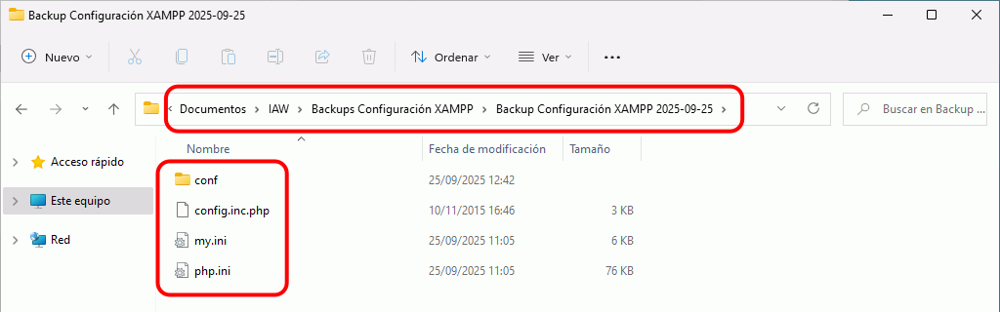
Apache (1) 1 - Directiva DocumentRoot
El objetivo de este ejercicio es comprobar que Apache sirve los ficheros existentes en el directorio indicado por la directiva DocumentRoot del archivo de configuración httpd.conf.
Detenga Apache si lo había iniciado. Abra la dirección http://localhost y que compruebe que no se recibe respuesta:
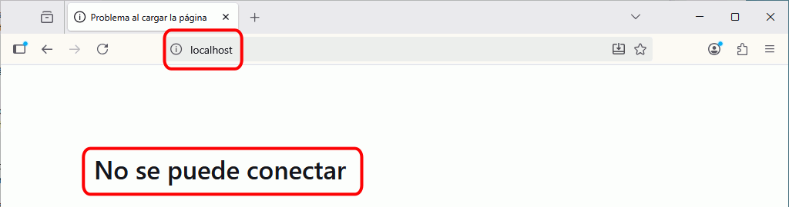
En el caso de Firefox, cuando no se recibe respuesta, Firefox modifica automáticamente la petición de http a htpps. Compruébelo haciendo clic en la barra de dirección para ver el protocolo:
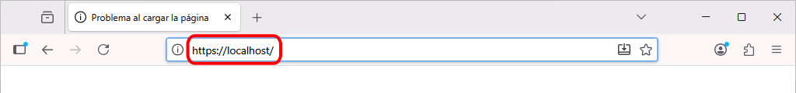
Si iniciáramos Apache y recargáramos la página, Firefox mostraría un aviso de seguridad indicando que el certificado de seguridad de Apache no es válido. Efectivamente, XAMPP no incluye un certificado válido, es el usuario el que debe obtener un certificado válido para el servidor.
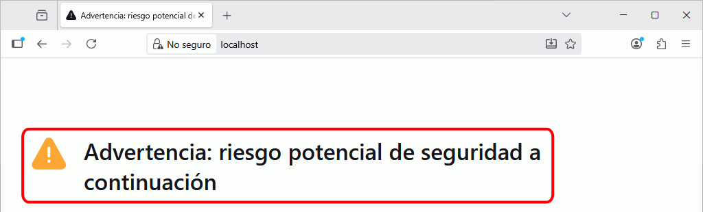
Para evitar este problema, en estos apuntes utilizaremos siempre el protocolo http, nunca el https.
Inicie Apache y compruebe que escribiendo la dirección http://localhost se muestra la página de inicio de XAMPP (concretamente, se produce una redirección a la URL http://localhost/dashboard/):
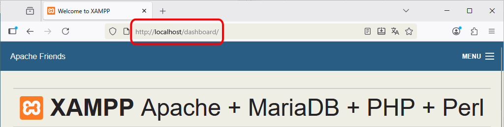
Abra el archivo principal de configuración de Apache httpd.conf con el Panel de control de XAMPP.
Compruebe que en el archivo httpd.conf la directiva DocumentRoot tiene el valor "C:/xampp/htdocs":
Compruebe en el navegador que puede ver esta página web escribiendo la dirección http://localhost/e01-1.html
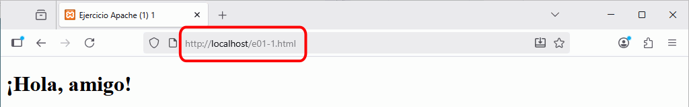
Apache (1) 2 - Modificar directiva DocumentRoot
El objetivo de este ejercicio es comprobar que es posible alojar páginas web en una carpeta distinta a la predeterminada.
Modifique en el fichero httpd.conf la directiva DocumentRoot de manera que apunte a la carpeta "C:\tmp\apache-1\". Modifique únicamente la línea de la directiva DocumentRoot.
Abra la URL http://localhost en el navegador y compruebe que sigue viendo la página de inicio de XAMPP.
Esto se debe a que no ha reiniciado el servidor. Recuerde reiniciar siempre el servidor tras modificar el archivo de configuración.
Reinicie el servidor y compruebe que Apache no puede iniciarse.
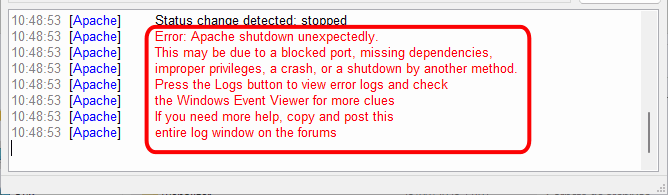
Esto se debe a que la directiva está haciendo una referencia a un directorio que no existe. Recuerde hacer siempre referencia a directorios que ya existen o cree los directorios a los que haga referencia.
Cree la carpeta "C:\tmp\apache-1\". Reinicie el servidor y compruebe que puede iniciarse.
Abra la URL http://localhost en el navegador y compruebe que el acceso a la carpeta no está permitido (el código de error HTTP correspondiente es 403).
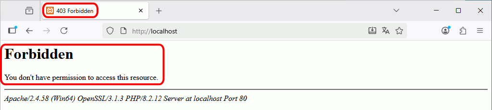
Esto se debe a que en el archivo de configuración de Apache hay ahora una referencia a una carpeta del sistema de archivos sin que haya también una directiva Directory para ella.
Modifique la directiva Directory que se encuentra a continuación de la directiva DocumentRoot de manera que apunte a la misma carpeta "C:\tmp\apache-1\". Reinicie el servidor y compruebe que puede iniciarse.
Abra la URL http://localhost en el navegador y compruebe que puede acceder a la carpeta. Compruebe que Apache le muestra el contenido de la carpeta (vacía).
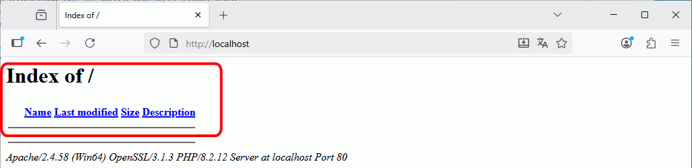
Cree con un editor de texto plano en la carpeta C:\tmp\apache-1\ un fichero que se llame prueba-1.html con el siguiente contenido:
Recargue la URL http://localhost en el navegador y compruebe que Apache muestra el fichero prueba-1.html en la carpeta.
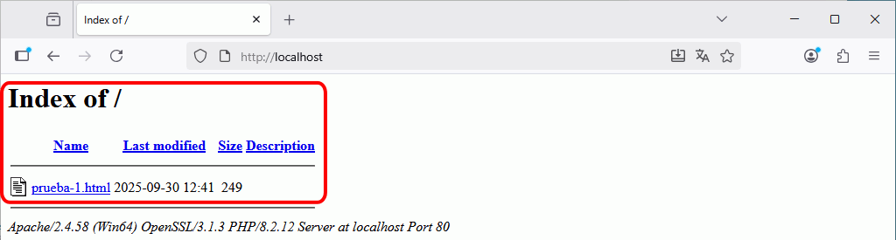
Haga clic en el nombre del fichero y compruebe que Apache muestra el contenido de la página prueba-1.html. Compruebe también que el navegador muestra en la barra de dirección el camino hasta el fichero.
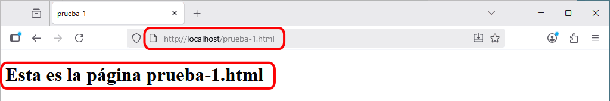
Apache (1) 3 - Directiva Listen
El objetivo de este ejercicio es comprobar que Apache "escucha" las peticiones en el puerto indicado por la directiva Listen del archivo de configuración httpd.conf.
Inicie Apache y compruebe que escribiendo la dirección http://localhost se muestra el contenido de la carpeta indicada por la directiva DocumentRoot:
Modifique la directiva Listen al valor 8000:
Listen 8000
Recargue la página en el navegador y compruebe que Apache no responde:
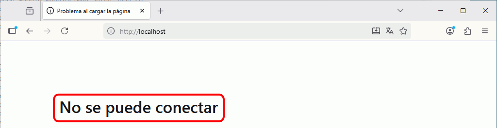
Abra la dirección http://localhost:8000 para comprobar que el motivo por el que Apache no respodía es que Apache está atendiendo al puerto 8000. Compruebe que haciendo la petición al puerto que atiende Apache, sí que se muestra el contenido:
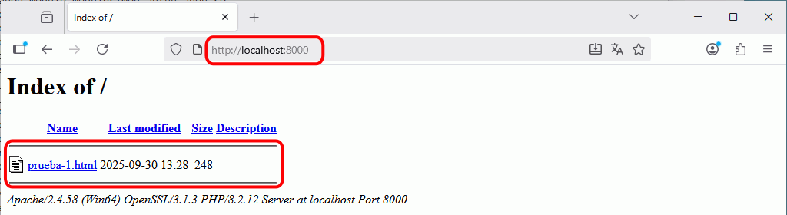
Haga clic en el nombre del fichero y compruebe que Apache muestra el contenido de la página prueba-1.html. Compruebe también que el navegador muestra en la barra de dirección el camino hasta el fichero que es ahora http://localhost:8000/prueba-1.html .
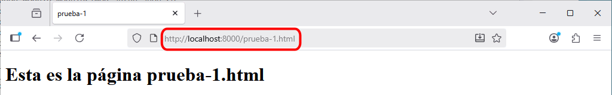
Devuelva la directiva Listen al valor 80:
Listen 80
Recargue la URL http://localhost:8000/prueba-1.html y en el navegador compruebe que Apache ya no atiende al puerto 8000:
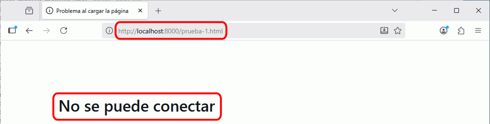
Abra la dirección http://localhost:80/prueba-1.html y compruebe que el navegador puede mostrar la dirección, aunque elimina la referencia al puerto 80 porque es el puerto habitual.
Apache (1) 4 - Directiva DirectoryIndex
Cree con un editor de texto plano un archivo test.html en la carpeta "C:\tmp\apache-1\". Por ejemplo:
<!DOCTYPE html>
<html lang="es">
<head>
<meta charset="utf-8">
<title>test</title>
<meta name="viewport" content="width=device-width, initial-scale=1.0">
</head>
<body>
<h1>Esta es otra página de prueba.</h1>
</body>
</html>
Abra la URL http://localhost en el navegador y compruebe que Apache le muestra los dos ficheros.
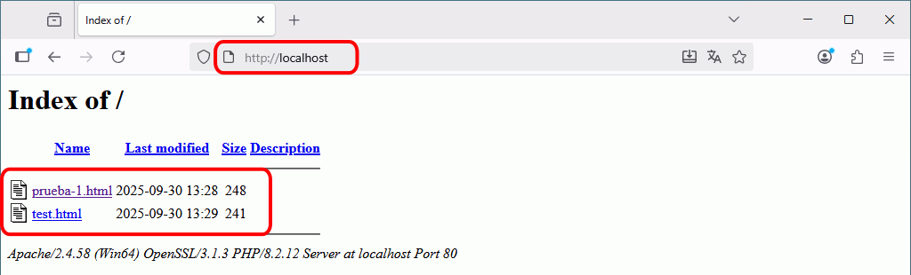
Cambie el nombre del fichero test.html a home.html y modifique su contenido.
Cree el alias /php que enlace a la carpeta "C:\Users\mclibre\Documents\IAW\PHP"
# Alias: Maps web paths into filesystem paths and is used to
# access content that does not live under the DocumentRoot.
# Example:
# Alias /webpath /full/filesystem/path
#
# If you include a trailing / on /webpath then the server will
# require it to be present in the URL. You will also likely
# need to provide a <Directory> section to allow access to
# the filesystem path.
Alias /php "C:\Users\mclibre\Documents\IAW\PHP"
<Directory "C:\Users\mclibre\Documents\IAW\PHP">
Options Indexes FollowSymLinks Includes ExecCGI
AllowOverride All
Require all granted
</Directory>
Abra la URL http://localhost/php en el navegador y compruebe que Apache le muestra el directorio:
Haga clic en el archivo test-1.html y compruebe que Apache le muestra su contenido:
Haga clic en el directorio prueba y compruebe que Apache le muestra el directorio:
Haga clic en el archivo test-2.html y compruebe que Apache le muestra su contenido:
Cree el alias /prueba que enlace a la carpeta "C:\Users\mclibre\Documents\IAW\PHP\prueba"
Abra la URL http://localhost/prueba en el navegador y compruebe que Apache le muestra el directorio:
 Para evitar este problema, en estos apuntes utilizaremos siempre el protocolo http, nunca el https.
Para evitar este problema, en estos apuntes utilizaremos siempre el protocolo http, nunca el https.